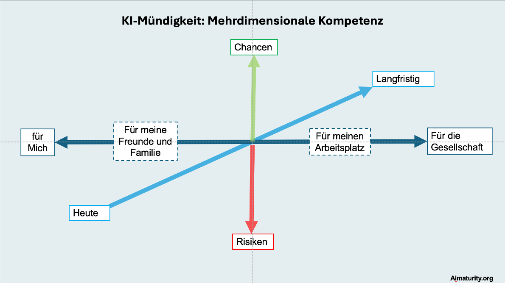

Die KI Revolution wird die Gesellschaft nachhaltiger und grundsätzlicher verändern als wohl die meisten anderen Meilensteine der Menschheitsgeschichte. Somit steht die Zivilgesellschaft innerhalb kürzester Zeit vor grundsätzliche Fragen. Heute sind wir noch nicht ausreichend darauf vorbereitet.
Um die Bürger bei den wichtigen politischen/regulatorischen Entscheidungen zur Gestaltung dieser neuen Welt mitzunehmen und negative Auswirkungen mangelnder Teilhabe zu verhindern, brauchen wir KI-Mündigkeit für alle.
Wir müssen wir sicherstellen, dass die Bürger im privaten Umfeld sowie auf gesellschaftlicher Ebene KI-Chancen und -Risiken erkennen, für sich bewerten und nutzen bzw. abwehren können. Dafür braucht es eine große Initiative zur digitalen Teilhabe, die nicht aus der freien Wirtschaft kommen kann und wird, und die anderweitig bisher nicht ersichtlich ist.
Ziel: Eine Gesellschaft von KI-mündigen Bürgern
Von Bürgern, die sowohl {Chancen und Risiken} – sowohl {Jetzt und Langfristig} für sowohl {sich/ihr direktes Umfeld als auch für die Gesellschaft} kennen, erkennen können und sich damit eine Meinung ebenso offen wie kritisch bilden können. Es geht nicht um die Vermittlung einer bestimmten politischen Agenda, sondern um die Möglichkeit für alle Bürger, sich auf Basis eines Grundverständnisses u.a. politisch zu verorten und in der Anwendung mündig agieren zu können.
Warum das „KI Führerschein" Programm – was davon gibt es bisher noch nicht?
Aktuelle Ansätze von KI Schulungen (von denen es zugegebenermaßen viele gibt) haben folgende essenzielle Mängel:
- Sie fokussieren sich oft auf produktivitätsrelevante KI-Kompetenzen, und damit auch auf das professionelle Umfeld - nicht wirklich auf die Entwicklung von ebenso offenen wie auch kritischen, KI-mündigen Bürgern
- Sie zielen nicht auf die wirkliche Masse der Bürger, also nicht auf Millionen von Menschen, - teils ohne digitale Vorbildung und mit kurzen Aufmerksamkeitsspannen - mit dem entsprechenden Bedarf an Barrierefreiheit/Zugänglichkeit.
- Sie kommen zu spät und dauern zu lange, um in der Gesamtgesellschaft ausreichend Wirkung zu zeigen.
- Sie sind vertrieblich unzureichend aufgestellt, um Millionen von Menschen zu erreichen.
Der „KI Führerschein" adressiert diese Themen durch ein differenziertes auf KI-Mündigkeit ausgerichtetes Curriculum, besonders niederschwellige Lerninhalte und -Vermittlung und den ambitionierten vertrieblichen Ansatz.